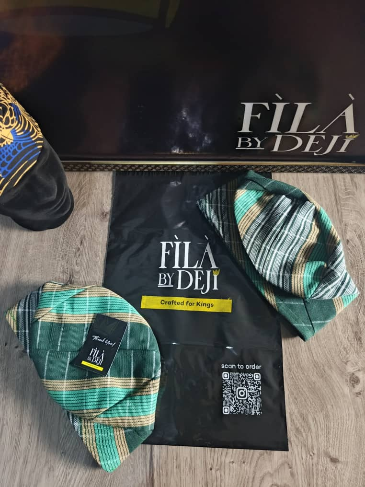

Heritage
An enduring tribute to Yoruba culture and the beauty of its traditions.
Honouring culture through a timeless expression of style.

CRAFTED FOR KINGSFìlà has long been a distinctive part of Yoruba dressing — an accessory that speaks of identity, dignity, and celebration.
FÌLÀ by Deji is inspired by that history. Our vision is to celebrate the beauty of traditional caps and present them with the care and elegance they deserve.
From ceremonial dressing to contemporary style, every cap represents a connection between generations.
Discover the collectionAn enduring tribute to Yoruba culture and the beauty of its traditions.
Attention to fabric, silhouette, and detail in every cap we present.
Pieces designed to complement personal style and mark memorable moments.